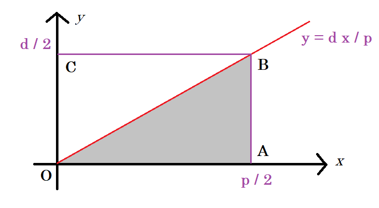
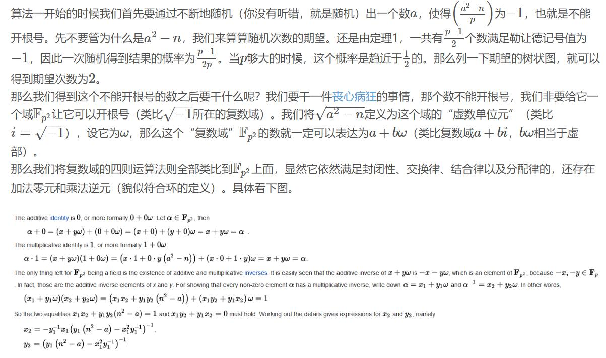
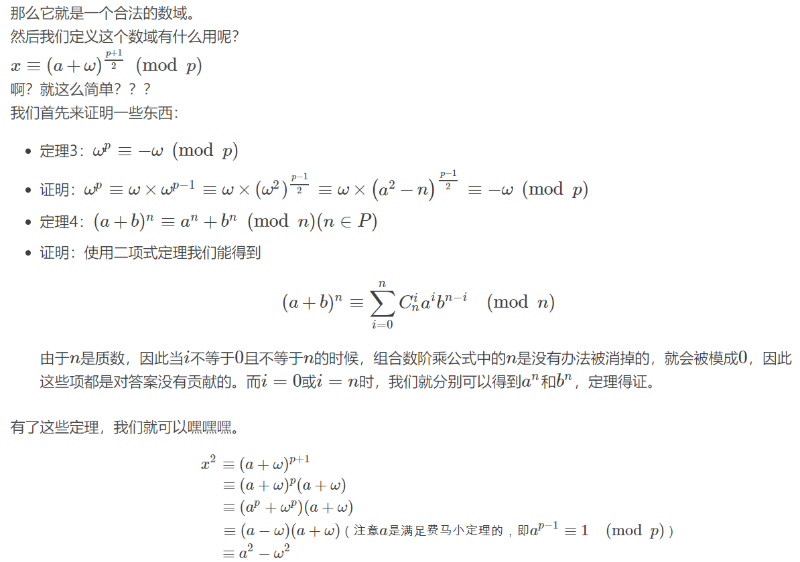
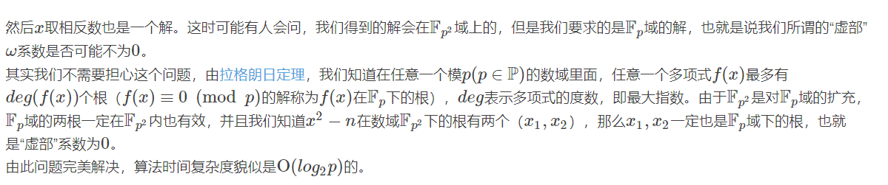

最近我一直在刷潘承洞、潘承彪的《初等数论》，感觉还是学到了不少东西呢。从现在我就来做一个数论之旅系列专题笔记吧，顺便也记录一下我的学习历程。
这一次笔记对应的是《初等数论》第四章同余方程 4.5 到 4.9 的内容，主要介绍二次剩余理论，包括欧拉判别法，勒让德符号，二次互反律，雅克比符号等，以及高次同余方程简介，给出了 $n$ 次剩余的判别公式。
在开始之前约定一下我的记号吧。未经说明的任何字母都代表自然数，小写字母 $p$ 始终代表奇素数，而大写的 $P$ 则不一定。
二次剩余
知识与定理
首先我们最初是想要解决二次同余方程 $ax^2+bx+c\equiv 0\pmod p$ 。我们经过配方等操作之后，可以发现这种方程化简之后唯一不平凡的形式就是 $x^2\equiv d \pmod p$ 这个样子。这个形式看似简单，不就是模意义下开根号么，可是里面藏着不少玄机。我们先给出一些定义：
模素数的二次剩余、二次非剩余的定义：
- 若关于 $x$ 的同余方程 $x^2\equiv d \pmod p$ 有解（$p\nmid d$），则称 $d$ 是模 $p$ 的二次剩余；
- 否则，称 $d$ 是模 $p$ 的二次非剩余。
注意：我们一般不谈 $\pmod 2$ 的二次剩余，也不谈 $0$ 是不是二次剩余。
显然，$\pmod p$ 的二次剩余一共有 $\frac{p-1}{2}$ 个，且方程 $x^2\equiv d \pmod p$ 要么无解，要么恰好有两个解。
欧拉判别法
设素数 $p>2, p\nmid d$ ，那么，$d$ 是模 $p$ 的二次剩余的充分必要条件是：
$$
d^{(p-1)/2} \equiv 1 \pmod p
$$
$d$ 是模 $p$ 的二次非剩余的充分必要条件是：
$$
d^{(p-1)/2} \equiv -1 \pmod p
$$
这个定理是一个比较重要的定理，我们可以轻易在 $O(\log p)$ 的时间内计算出一个数是不是二次剩余，而在大部分ACM竞赛中对于二次剩余也只需要了解这么多。这个地方我暂时不给出证明，以后提到的原根之后，我们将给出一种统一的证明方式，这种证法同时能证明之后提到的 $n$ 次剩余的结论。
由欧拉判别法，根据其只有-1，1这两种取值特点，结合乘方的性质，我们可以很轻易地发现下面的性质：
- 二次剩余 $\times$ 二次剩余 = 二次剩余
- 二次剩余 $\times$ 二次非剩余 = 二次非剩余
- 二次非剩余 $\times$ 二次非剩余 = 二次剩余
模 $p$ 意义下，这种二次剩余的关系满足一种积性性质！那么，我们就引入一种一种完全积性函数来表示二次剩余吧，由此勒让德符号应运而生。
勒让德符号
定义整变量 $d$ 的函数（ $p$ 是素数）
$$
\left(\frac{d}{p}\right) =
\begin{cases}
1 & \text{d是模p的二次剩余} \\
-1 & \text{d是模p的二次非剩余}\\
0 & p\mid d
\end{cases}
$$
我们把 $\left(\frac{d}{p}\right)$ 称为模 $p$ 的勒让德符号。
勒让德符号满足下面的性质:
- $\left(\frac dp \right) = \left( \frac{p+d}{p}\right)$ ；即：勒让德符号有周期性。
- $\left(\frac{d}{p}\right) \equiv d^{(p-1)/2} \pmod p$ 这是因为欧拉判别法
- $\left(\frac{dc}{p}\right) = \left(\frac{d}{p}\right) \left(\frac{c}{p}\right)$
有了第一、第三点，我们称勒让德符号是模 $p$ 的Dirichlet特征，勒让德符号因此具有良好的性质；而有了第二点，我们可以方便地使用快速幂来计算勒让德符号。
二次剩余这么就完全解决了吗？从理论上讲，还有很多非常优美的性质没有挖掘呢！下面我们就引出初等数论最重要的成果之一：高斯的二次互反律。首先我们介绍高斯引理：
高斯引理
设 $p \nmid d$；再设 $1\leq j \leq (p-1)/2$，令
$$
t_i \equiv jd \pmod p,\text{ } 0 < t_j < p
$$
以 $n$ 表示这 $(p-1)/2$ 个 $t_i$ 中大于 $p/2$ 的数的个数，那么：
$$
\left(\frac{d}{p}\right) = (-1)^n
$$
事实上，当 $\gcd(d,2p)=1$ 时，我们还有 $n$ 的精确表达式：
$$
n = \sum_{i=1}^{(p-1)/2} \left[\frac{jd}{p}\right]
$$
这个定理还是蛮有用的，有了高斯引理，我们就可以解决一部分勒让德符号计算的问题了：（读者可以自己验证）
- $\left( \frac{1}{p} \right) \equiv 1$ 这个根据定义显然；
- $\left( \frac{-1}{p} \right) \equiv (-1)^{\frac{p-1}{2}}$ 根据定义显然，$4k+1$ 型素数-1是二次剩余；
- $\left( \frac{2}{p} \right) \equiv (-1)^{\frac{p^2-1}{8}}$ 用高斯引理易得。这说明对于 $8k\pm 1$ 型素数 $2$ 是二次剩余；
那么如何证明呢？高斯引理的证明是挺精妙的，我们只证明前一半部分。我们考虑 $t_i$ 的乘积，一方面：
$$
\prod_{i=1}^{(p-1)/2} t_i = d^{(p-1)/2} \prod_{i=1}^{(p-1)/2} i
$$
另一方面，把 $t_i$ 中所有大于 $(p-1)/2$ 的数 $r$ 换成 $p - r$ ，即可使这些 $t_i$ 形成 $1,2,\cdots,(p-1)/2$ 的一个排列，这个过程中一共有 $n$ 个数被调换，因此乘积中会出现 $(-1)^n$ 的因子。由此：
$$
\prod_{i=1}^{(p-1)/2} t_i = (-1)^n \prod_{i=1}^{(p-1)/2} i
$$
综合上面两个式子，即可得到这个定理。
如果稍微进行一些分析，就可以得到 $n$ 的表达形式了，这里不再展开。可是我们能够注意到， $n$ 的形式不是类欧几里得算法的形式么？我们自然要考虑它的几何意义。如下图，这个值就是阴影三角形 $\triangle OCB$ 内部格点的数目。为什么说是内部呢？很好证明，这个三角形斜边上不会出现格点。

二次互反律
在上面的图片里面，我们不禁要问还有没有别的几何意义。我们观察 $\triangle OCB$ ，这个三角形就是 $\left(\frac{p}{d}\right)$ 啊！（注意我们之前约定过 $d$ 是奇数）。那么这两个三角形的格点数目之和正好就是整个矩形的格点数目 $\frac{p-1}{2} \cdot \frac{d-1}{2}$ ！由此我们就证明了二次互反律：
设 $p,q$ 为奇素数，$p\neq q$ ，则有：
$$
\left(\frac qp\right) \cdot \left( \frac pq \right) = (-1)^{\frac{p-1}{2} \cdot \frac{q-1}{2}}
$$
二次互反律的理论价值和实用价值都很高，可以证明很多命题，下面举几个《初等数论》上的例题吧，读者可以想一想怎么解决，之后可能会更新解答。
- 证明有无穷多个 $8k+1$ 型质数
- 求以 $11$ 为其二次剩余的所有奇素数 $p$
- 证明：若$\left(\frac dp\right) = -1$ ，则 $p$ 必然不能表示为 $x^2-dy^2$ 的形式。
我们再说一说二次互反律的另一个重要价值——计算勒让德符号。有了二次互反律，我们可以设计一种类欧几里得算法！回想我们是如何使用欧几里得算法求最大公约数的：
- 我们知道 $\gcd(a,0)=a$ 这一种平凡情况
- 否则，利用 $\gcd(a,b) = \gcd(b,a\%b)$ ，我们可以将问题规模缩小一半，从而让问题可以化为平凡情况
对于勒让德符号的计算，我们不也可以这样吗？我们有这么几个条件：
- 当勒让德符号上面的数 $d=1,2 \text{ or } -1$ 时，可以直接给出答案；
- 否则，根据互反律，我们可以交换上下两个数，$O(1)$ 计算那个多出来的 $(-1)^{\frac {p-1}{2} \cdot \frac{q-1}2}$ 因子，然后用Legendre符号的周期性进行取模，使得问题规模缩小一半。
这不是挺完美的吗？别高兴得太早！别忘记，勒让德符号要求符号下面的数 $p$ 可要是质数！正因为这一点，互反律成立需要 $p,q$ 是奇素数才可以！这样才能保证勒让德符号有意义！这可麻烦了，这样的话，就是计算个勒让德符号，还要必须将数分解质因数！分解质因数可不是个简单的事情，当数比较大的时候这个开销是花不起的。那么我们怎么办呢？我们可以拓展勒让德符号的定义，我们来定义雅克比符号：
雅克比符号
设奇数 $P>1$，$P=p_1p_2\cdots p_s$ ，则定义雅克比符号为：
$$
\left( \frac dP \right) = \prod_{i-1}^{s} \left(\frac d{p_i}\right)
$$
其中乘积项中的符号是勒让德符号。
可以验证，雅克比符号满足勒让德符号的一切性质，并且满足互反律，因此可以辅助计算勒让德符号。
可是有一点必须强调：雅克比符号 $\left( \frac dP \right)=1$ 绝不保证 $x^2\equiv d \pmod P$ 一定有解！例如：$\left(\frac 2 {3599}\right) = 1$ ，可是 $x^2\equiv 2 \pmod {3599}$ 无解！
其实雅可比符号还有拓展，叫做Kronecker符号，甚至还可以拓展到有理数范围，叫做Hilbert符号。这里给出维基百科的链接吧 Legendre，此处不再详细说明了。（其实是因为我也不会）
下面是一个雅克比符号的模板。使用二次互反律计算，复杂度 $O(\log \min \{a,n\})$ 。Accepted on HDU3589
1 | int Jacobi(int a, int n) { |
Cipolla算法
上面主要是在讲如何判断二次剩余存不存在的问题，可是如果知道存在了，到底应当怎样构造呢？Cipolla算法即可解决这个问题。这个算法感觉数学背景还是蛮深厚的，是一个挺有趣的算法。
推荐博客 czy ，下面内容是从他的博客上抄的。



模板题： Timus 1132
1 |
|
例题
题解允许我先咕一下QAQ
[CF1091G] New Year and the Factorisation Collaboration
蛮有意思的CF题，在Goodbye 2018里出的。
BZOJ1406 [AHOI2007]密码箱
题意：求下面同余方程的所有解：$(n\leq 2\cdot 10^9)$
$$
x^2\equiv 1 \pmod n
$$
解法：
对于方程 $x^2\equiv 1 \pmod{p^\alpha}$ ，只需要进行分类讨论，然后Hensel引理升幂。对于任意模数的情况，只需要再用CRT合并。
[SCOI2018] Numazu的蜜柑
模素数的高次同余方程
模意义下的因式定理
现在我们要解决更加困难的问题了：给定整系数多项式 $f(x)$，求解 $f(x)\equiv 0 \pmod p$ 。对于实数域，有因式定理，即如果 $f(x)$ 有根 $c$，则 $f(x)$ 有因式 $(x-c)$。对于模意义下有没有类似性质呢？答案是肯定的。
设 $p\nmid a_n$ ，若 $n$ 次同余方程 $f(x) \equiv 0 \pmod p$ 有 $k$ 个不同的解 $x\equiv c_1,\cdots,c_k \pmod p$ ，则一定存在唯一一对整系数多项式 $g_k(x), r_k(x)$，使得：
$$
f(x) = (x-c_1)\cdots(x-c_k)g_k(x) + p \cdot r_k(x)
$$
这个定理还有一种等价表述，即Lagrange定理：
$f(x) \equiv 0 \pmod p$ 的解数 $k \leq \min(n,p)$
结合上面定理，我们可以得到一个强有力的结论，即判别 $n$ 次方程恰有 $n$ 个解的方法：
设 $a_n=1$ ，那么 $f(x) \equiv 0 \pmod p$ 的解数等于 $n$ 的充分必要条件是：存在整系数多项式$q,r$ ，且$r$ 次数小于 $n$，使得：
$$
x^p-x = f(x)q(x) + p\cdot r(x)
$$
$n$ 次剩余
由此，我们就具有了解决 $n$ 次剩余的理论基础。我们称 $x^n\equiv a \pmod p (p\nmid a)$ 为二项同余方程，而如果这个方程有解，则称 $a$ 为模 $p$ 的 $n$ 次剩余，否则为 $n$ 次非剩余。可以利用原根证明下面两个定理：
若 $n\mid p-1$ ，则 $x^n\equiv a \pmod p (p\nmid a)$ 的充要条件是：
$$
a^{(p-1)/n} \equiv 1 \pmod p
$$
若 $n\nmid p-1$ ，令 $k=\gcd(n,p-1)$ 则 $x^n\equiv a \pmod p (p\nmid a)$ 的充要条件是：$x^k\equiv a \pmod p $ 有解，且解数相同。即有解的充分必要条件是：
$$
a^{(p-1)/k} \equiv 1 \pmod p
$$
这样我们就找到了欧拉判别法的推广！我们也可以快速解决判断 $n$ 次剩余的问题了！可是还有没有类似勒让德符号的定义了呢，有没有互反律之类的东西了呢？在自然数范围内是没有了，如果使用代数数论的观点来看，应该还是有的，可是超出了我们的讨论范围。